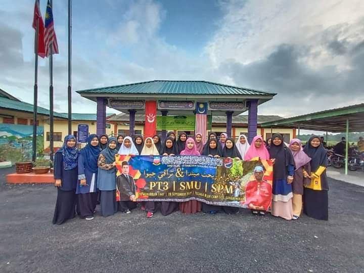
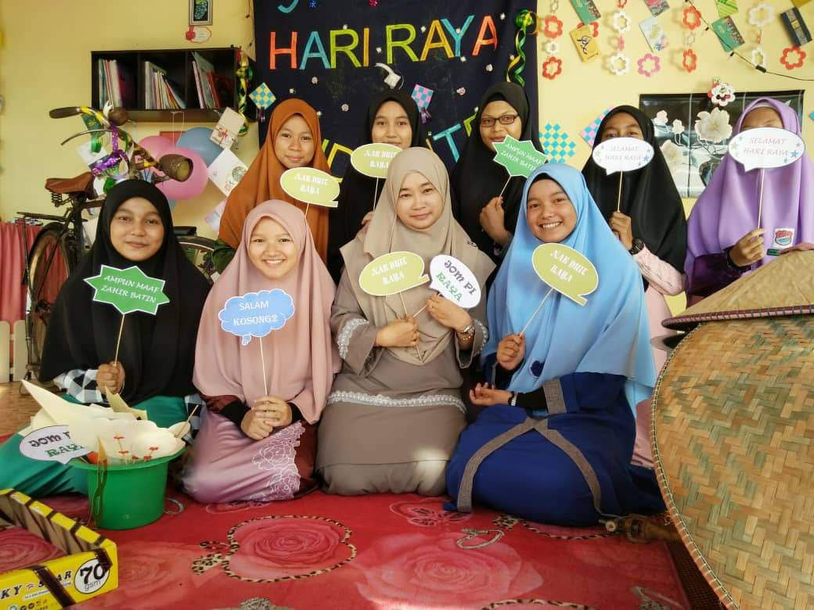
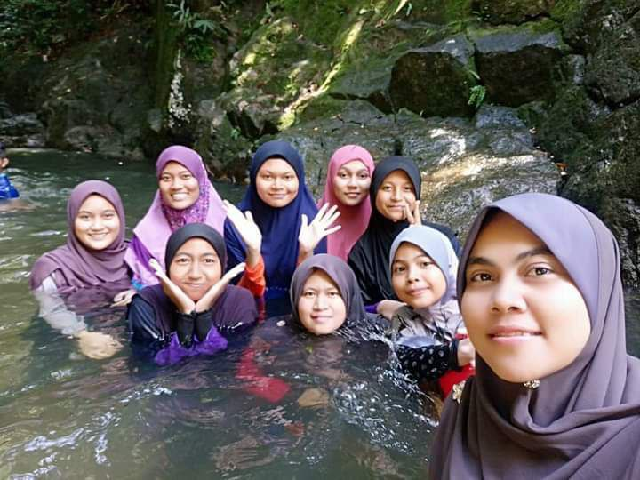
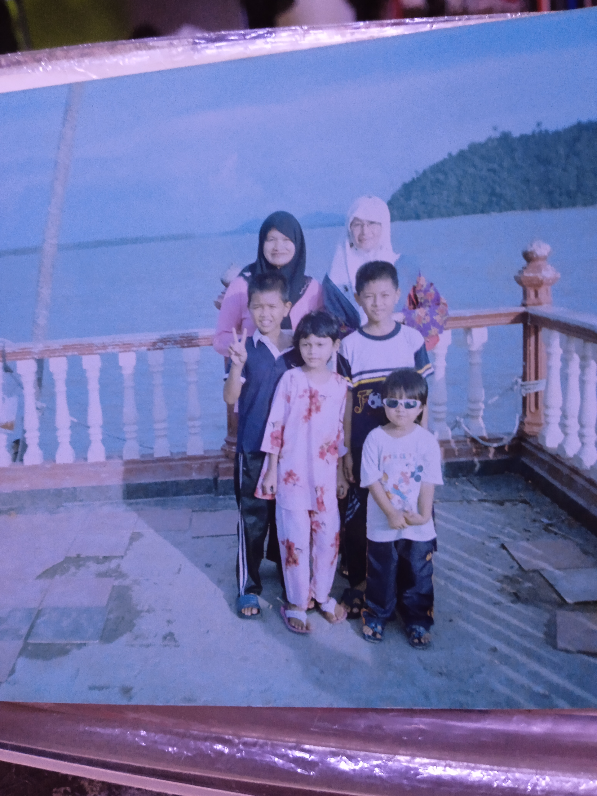
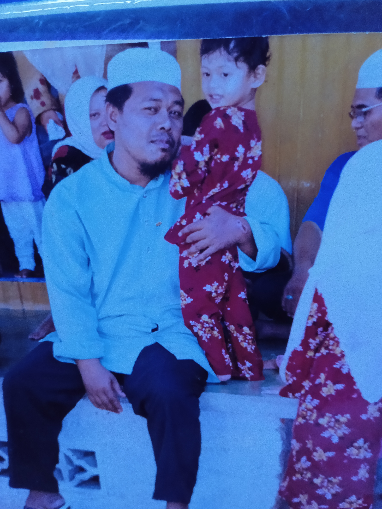
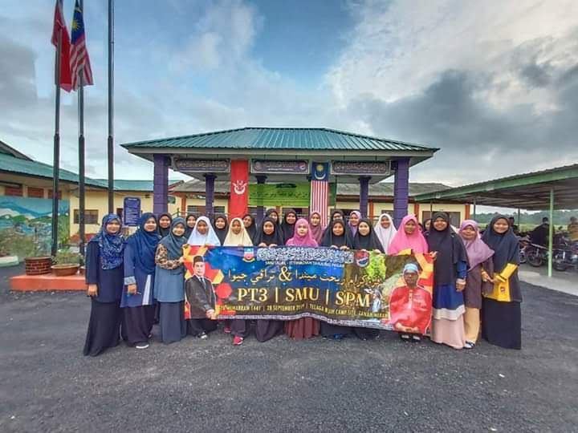
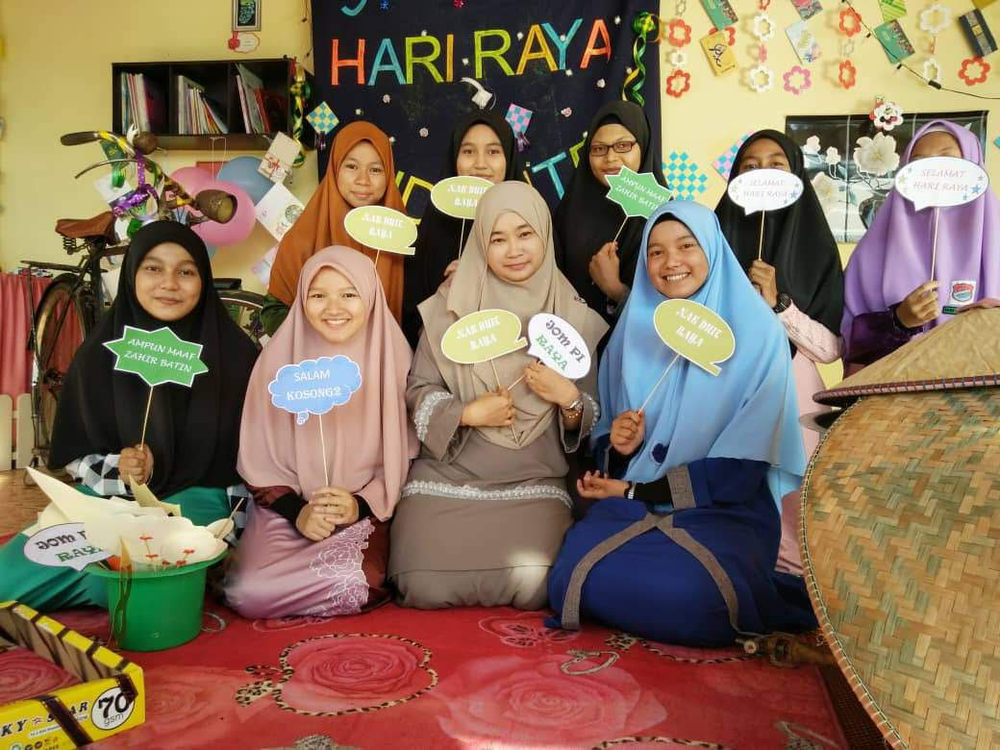
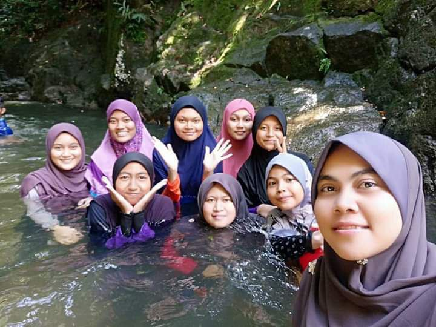
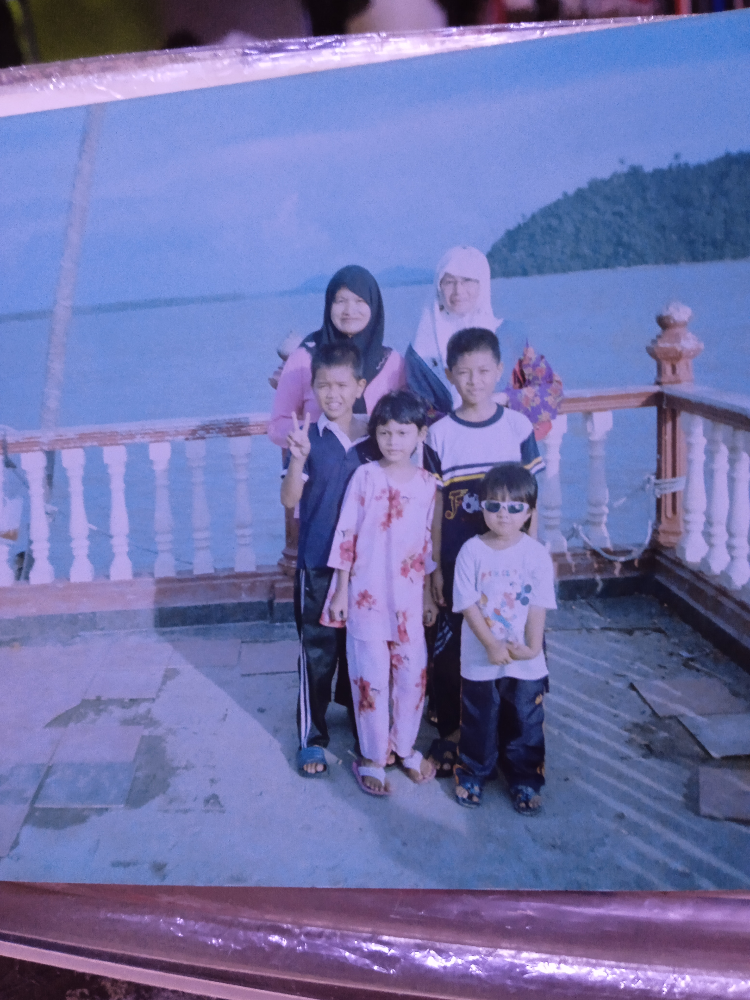
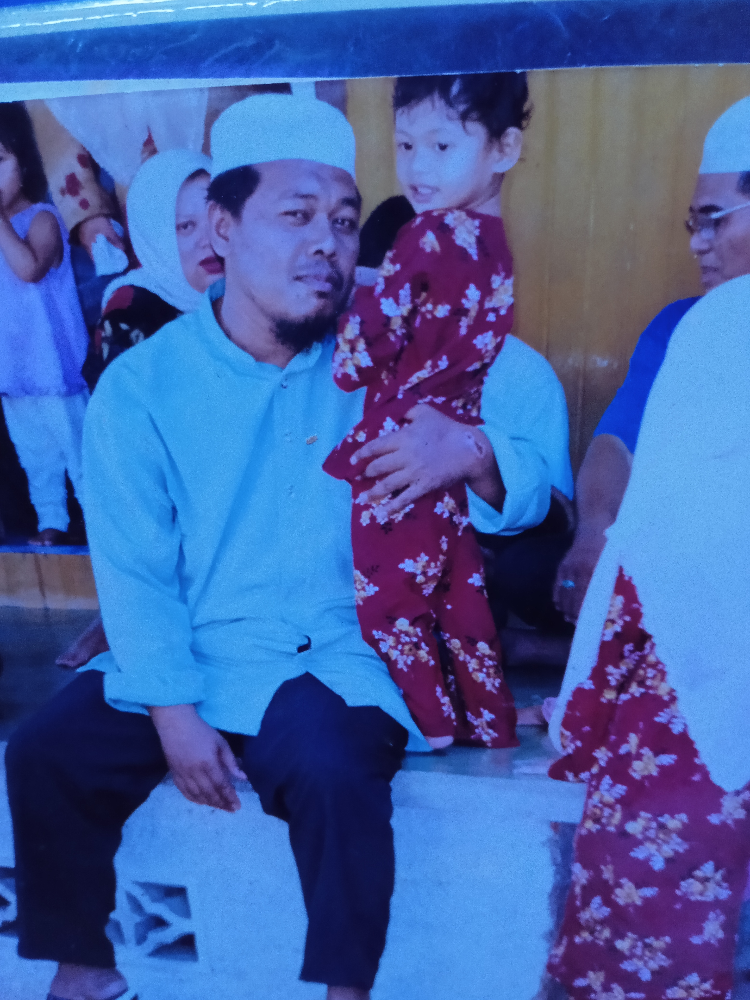

AISHAH'S GALLERY
Beloved Memories are a remarkable piece of our life.
The clever, most joyful, delightful, best, superb and remarkable Memories of youth days are very difficult to quit recalling.
Youth is truth be told the most awesome aspect of anybody’s life.
In this page, I will show you my favourite memories that I cherished the most.
This is my diploma friends and this selfie is the first picture we took after we met each other in real life.
This is a photo of my classmates and it was taken during the Zumba Color event. We had so much fun played with color powder. One of my greatest memories.
This is me with my high school besties. We got to met each other after 2 years of separation. We exchanged a lot of stories especially our life after further study at university.
This is my former high school classmates. This photo took during Ramadhan 2022. We hang out to break a fast together. I cherished this memory because we never hang out until midnight. So it was a rare moment to me.
This is 2019 photo where there are event “Watikah Pelantikan”.
I was “Penolong Ketua Pusat Sumber” at this time and I appreciated the trust my teacher gave to me.
This is my internship picture during the semester break of semester 3. I was doing my internship training at Perbadanan Perpustakaan Awam Kedah for six weeks. It was a fun mement as I learned a lot and met a helpful staff.
This is my friend from another class, Muhammad Azri. We rarely met each other as we in different class but we always help each other especially in assignment.
AISHAH'S RANDOM GALLERY
 








